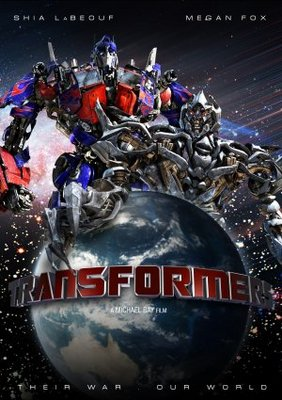

April 6th, 1917. As a regiment assembles to wage war deep in enemy territory, two soldiers are assigned to race against time and deliver a message that will stop 1,600 men from walking straight into a deadly trap. IMDB - 8.3/10
In the prehistoric past, a young man struggles to return home after being separated from his tribe during a buffalo hunt. He finds a similarly lost wolf companion and starts a friendship that would change humanity. IMDB - 6.7/10
A paraplegic Marine dispatched to the moon Pandora on a unique mission becomes torn between following his orders and protecting the world he feels is his home. IMDB - 7.8/10

Earth's mightiest heroes must come together and learn to fight as a team if they are going to stop the mischievous Loki and his alien army from enslaving humanity. IMDB - 8.0/10

A selfish Prince is cursed to become a monster for the rest of his life, unless he learns to fall in love with a beautiful young woman he keeps prisoner. IMDB - 7.1/10
Hobbs has Dominic and Brian reassemble their crew to take down a team of mercenaries: Dominic unexpectedly gets sidetracked with facing his presumed deceased girlfriend, Letty. IMDB - 7.1/10
.jpg)
When a mysterious woman seduces Dominic Toretto into the world of terrorism and a betrayal of those closest to him, the crew face trials that will test them as never before. IMDB - 6.7/10
Dominic Toretto and his crew of street racers plan a massive heist to buy their freedom while in the sights of a powerful Brazilian drug lord and a dangerous federal agent. IMDB - 7.3/10
Rey develops her newly discovered abilities with the guidance of Luke Skywalker, who is unsettled by the strength of her powers. Meanwhile, the Resistance prepares for battle with the First Order. IMDB - 7.0/10

Jack Sparrow and Will Turner try to steal an object from a Portuguese fortress in Panama. They are double-crossed and captured. While facing the gallows, Jack begins to retell some of his stories to Will. IMDB - 7.8/10
When a killer shark unleashes chaos on a beach community, it's up to a local sheriff, a marine biologist, and an old seafarer to hunt the beast down. IMDB - 8.0/10
Four teenagers are sucked into a magical video game, and the only way they can escape is to work together to finish the game. IMDB - 6.9/10
A vengeful fairy is driven to curse an infant princess, only to discover that the child may be the one person who can restore peace to their troubled land. IMDB - 7.0/10
When a beautiful stranger leads computer hacker Neo to a forbidding underworld, he discovers the shocking truth--the life he knows is the elaborate deception of an evil cyber-intelligence. IMDB - 8.7/10
The last witch hunter is all that stands between humanity and the combined forces of the most horrifying witches in history. IMDB - 6.0/10
An ancient struggle between two Cybertronian races, the heroic Autobots and the evil Decepticons, comes to Earth, with a clue to the ultimate power held by a teenager. IMDB - 7.0/10
In a world where mutants (evolved super-powered humans) exist and are discriminated against, two groups form for an inevitable clash: the supremacist Brotherhood, and the pacifist X-Men. IMDB - 7.4/10
Thomas is deposited in a community of boys after his memory is erased, soon learning they're all trapped in a maze that will require him to join forces with fellow "runners" for a shot at escape. IMDB - 6.8/10
Follows the personal and professional lives of six twenty to thirty-something-year-old friends living in Manhattan. IMDB - 8.9/10
Nine noble families fight for control over the lands of Westeros, while an ancient enemy returns after being dormant for millennia. IMDB - 9.3/10
A group of ambitious misfits try to escape the harsh realities of high school by joining a glee club headed by a passionate Spanish teacher. IMDB - 6.7/10
Privileged teens living on the Upper East Side of New York can hide no secret from the ruthless blogger who is always watching. IMDB - 7.4/10
The survivors of a plane crash are forced to work together in order to survive on a seemingly deserted tropical island. IMDB - 8.3/10
A scrappy, feisty, fiercely loyal Chicago family makes no apologies. IMDB - 8.6/10
A scrappy, feisty, fiercely loyal Chicago family makes no apologies. IMDB - 9.1/10
Two brothers follow their father's footsteps as hunters, fighting evil supernatural beings of many kinds, including monsters, demons and gods that roam the earth. IMDB - 8.4/10
Set ninety-seven years after a nuclear war has destroyed civilization, when a spaceship housing humanity's lone survivors sends one hundred juvenile delinquents back to Earth, in hopes of possibly re-populating the planet. IMDB - 7.6/10
The lives, loves, dangers and disasters in the town, Mystic Falls, Virginia. Creatures of unspeakable horror lurk beneath this town as a teenage girl is suddenly torn between two vampire brothers. IMDB - 7.7/10
Due to a political conspiracy, an innocent man is sent to death row and his only hope is his brother, who makes it his mission to deliberately get himself sent to the same prison in order to break the both of them out, from the inside. IMDB - 8.3/10
In a war-torn world of elemental magic, a young boy reawakens to undertake a dangerous mystic quest to fulfill his destiny as the Avatar, and bring peace to the world. IMDB - 9.2/10
Lion prince Simba and his father are targeted by his bitter uncle, who wants to ascend the throne himself. IMDB - 8.5/10

A hot-shot race-car named Lightning McQueen gets waylaid in Radiator Springs, where he finds the true meaning of friendship and family. IMDB - 7.1/10
A rat who can cook makes an unusual alliance with a young kitchen worker at a famous restaurant. IMDB - 8.0/10
In the distant future, a small waste-collecting robot inadvertently embarks on a space journey that will ultimately decide the fate of mankind. IMDB - 8.4/10
After his son is captured in the Great Barrier Reef and taken to Sydney, a timid clownfish sets out on a journey to bring him home. IMDB - 8.1/10
When Blu, a domesticated macaw from small-town Minnesota, meets the fiercely independent Jewel, he takes off on an adventure to Rio de Janeiro with the bird of his dreams. IMDB - 6.9/10
Copyright © 2020 THETEAM?